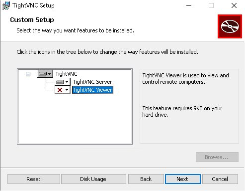
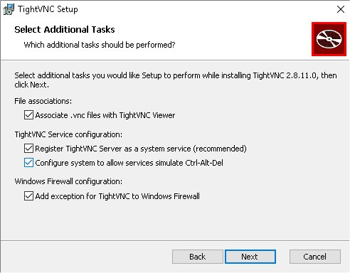

|
TightVNC |
|
|
|
|
| Las siglas VNC (Virtual
Network Computing) identifican a una solución que permite conectar dos
sistemas informáticos a través de una conexión cliente-servidor mediante un
determinado protocolo. VNC es independiente del sistema operativo, tanto
del cliente como del servidor. A diferencia de otras soluciones de conexión remota, VNC no utiliza a un tercero para facilitar la negociación de puertos y el establecimiento de la conexión. En el caso de conexiones entre equipos conectados a través de un router NAT (ADSL/FTTH) deberemos configurarlo para reencaminar el tráfico entrante al puerto que vayamos a utilizar (normalmente TCP/5901) hacia la IP interna de nuestra LAN. |
|
Instalación Lo primero que tendremos que hacer es instalar los componentes básicos. Además del propio TightVNC (https://www.tightvnc.com/download.php). Los autores recomiendan además instalar un driver virtual de pantalla que permite optimizar el rendimiento de las comunicaciones: DFMirage Driver (https://www.tightvnc.com/download/dfmirage/dfmirage-setup-2.0.301.exe). Comenzamos por este último.
Una vez terminada la instalación, nos pedirá reiniciar el sistema.
Una vez reiniciado el sistema, si vamos al Administrador de Dispositivos, en Pantallas, veremos nuestro monitor físico y otro denominado Mirage Driver.
Procedemos a instalar TightVNC
Como se ha comentado anteriormente, VNC es una solución cliente-servidor, por lo que podremos optar por instalar cualquiera de las partes o ambas. Si optamos por la opción Typical, instalaremos ambas. Si optamos por Custom podremos indicar qué parte queremos instalar.  En el ejemplo se ha indicado que sólo se quiere instalar la parte servidor. Por ejemplo, si se trata de un sistema al que sólo entraremos en remoto y desde el que no nos vamos a conectar a terceros, es normal que únicamente instalemos la parte servidor.  Es muy recomendable (debiera ser obligatorio bajo mi punto de vista) la utilización de claves tanto para el inicio de sesión como para entrar en modo administrador. Que es lo que se nos está pidiendo en esta pantalla.
Configuración Una vez finalizada la instalación, tendremos configurado el Firewall de Windows y el servicio TightVNC a la espera de conexiones remotas. Prueba de ello es que podremos ver en la barra de tareas el incono de TightVNC, que punsando el botón derecho del ratón nos desplegará este menú de opciones. Vamos a entrar en Configuration para revisar la configuración de servidor. Como vamos a entrar en modo administrador, nos pide al password de administrador de TightVNC que habemos indicado unos pasos antes. En la pestaña Server, como más importante, podremos configurar el puerto por el que escuchará el servidor las solicitudes de conexión. En la pestaña Administration, podremos configurar qué hacer cuando se cierra una conexión. En mi opinión, por razones de seguridad, se debe bloquear la sesión, forzando que se vuelva a solicitar la identificación de Windows al volver a conectarse. Esto no impide que los programas que se estén ejecutando lo sigan haciendo mientras la sesión está bloqueada.
Acceso remoto Al igual que en los equipos a los que vamos a acceder de manera remota habremos instalado la parte de servidor, en los que puedan actuar de clientes instalaremos la parte cliente. En cuyo caso tendremos que utilizar el TightVNC Viewer (C:\Program Files\TightVNC\tvnviewer.exe). En Options podremos configurar los niveles de compresión en las comunicaciones, de lo que dependerá mucho el ancho de banda que necesitemos. Por mi experiencia, el nivel 6 es muy aceptable tanto para compresión como para calidad de JPEG. En Configure podremos ajustar algún parámetro adicional. Podréis observar que la primera vez que os conectéis en remoto a un sistema os pedirá la clave de sesión, no haciéndolo las siguientes. Esto es debido a que es capaz de recordarlas. Aquí podremos indicarle cuántas queremos que recuerde y si queremos que las borre. IMPORTANTE: A la hora de indicar el sistema al que queremos, podemos indicar el nombre (si usamos DNS) o la IP, pero es necesario indicar el puerto por el que sabemos estará escuchando el servidor, separado por dos caracteres consecutivos de dos puntos: "::"
El TightVNC Viewer os permitirá conectaros a cualquier sistema que utilice VNC como protocolo de acceso remoto. En mi caso, el hipervisor (sistema físico) donde corren las máquinas (virtuales) que gestionan mi observatorio remoto, que se basa en Debian con escritorio Xfce, accedo mediante VNC, como podéis ver en esta captura. Con las misma herramienta con las que luego accedo a las máquinas virtuales que corren en Windows 10.
Y con esto ya podéis empezar a jugar con otra herramienta de acceso remoto, gratuita y sin el miedo que con el tiempo os reclamen en pago de licencias por uso. Creo que no se me olvida nada importante, por lo que espero que este pequeño tutorial os sea de utilidad.
|